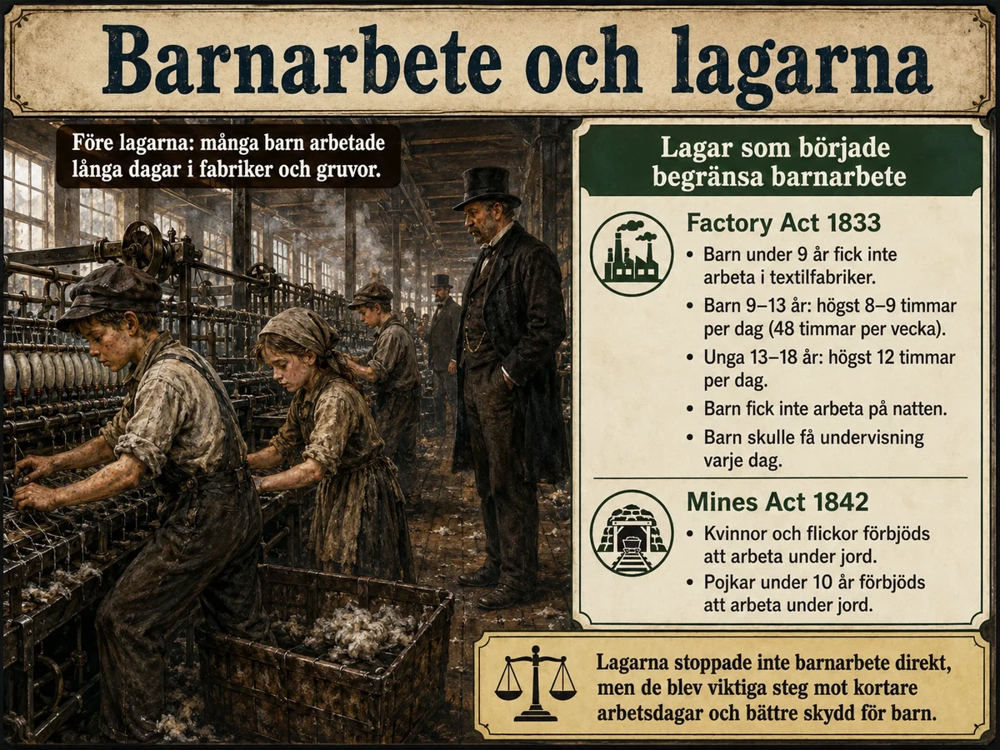

— människorna i fabrikerna och gruvorna, och kampen för de första lagarna —
En viktig orsak till att den industriella revolutionen kunde växa fram var att det fanns många människor som behövde arbete. Före industrialiseringen bodde de flesta på landsbygden och arbetade med jordbruk.
Under 1700- och 1800-talet förändrades jordbruket. Nya metoder och större gårdar gjorde att färre behövdes på landsbygden. Samtidigt ökade befolkningen. Många flyttade därför från landsbygden till städerna. Denna flytt kallas urbanisering. I städerna växte fabriker, gruvor och hamnar fram. Fabrikerna behövde arbetare, och många fattiga behövde lön.
En viktig orsak till att den industriella revolutionen kunde växa fram var att det fanns många människor som behövde arbete. Före industrialiseringen bodde de flesta på landsbygden och arbetade med jordbruk. Men under 1700- och 1800-talet förändrades jordbruket. Genom skiftesreformer, bättre redskap, växelbruk och bättre djuravel kunde man producera mer mat än tidigare. Samtidigt behövdes inte lika många människor i jordbruket. Många fick svårare att försörja sig på landsbygden.
Befolkningen ökade. Fler barn klarade sina första levnadsår och fler levde längre. Det blev fler som behövde mat, bostad och arbete. Många flyttade från landsbygden till städerna — detta kallas urbanisering. Fabrikerna behövde arbetskraft, och många fattiga behövde lön. Jordbrukets förändring, befolkningsökningen och fabrikernas tillväxt hängde alltså ihop.
En fabrik behöver tre saker för att fungera: kapital, maskiner — och människor som arbetar i den. De två första har du redan mött, men den tredje är på sitt sätt den mest omvälvande, för bakom den döljer sig födelsen av en helt ny samhällsklass. Frågan "varifrån kom arbetskraften?" leder oss nämligen till en av de djupaste förändringarna i hela den moderna historien: uppkomsten av massan av lönearbetare.
Svaret börjar på landsbygden, och det knyter ihop det här temat med jordbruksrevolutionen. När skiftesreformerna och de brittiska enclosure-lagarna samlade och privatiserade marken, och när nya metoder gjorde jordbruket effektivare, hände två saker samtidigt. Å ena sidan behövdes det färre händer på åkrarna — en enda bonde med järnplog och såmaskin uträttade vad det förr krävts flera för. Å andra sidan ökade befolkningen kraftigt, tack vare mer mat och lägre dödlighet. Resultatet blev ett stort överskott av människor på landsbygden som varken hade mark eller arbete. De hade helt enkelt inte längre någon plats i det gamla systemet.
Dessa människor drevs mot städerna av två krafter som brukar kallas tryck och dragning. Landsbygden tryckte bort dem: torpare och obesuttna som förlorat sin försörjning hade inget val. Städerna och fabrikerna drog till sig dem med löftet om lön och arbete. Denna rörelse — urbaniseringen — förvandlade på några generationer Europa från ett land av byar till ett land av växande industristäder.
Tempot och skalan i denna omflyttning var något världen aldrig sett. En stad som Manchester, industrialiseringens sinnebild, växte på några decennier från en ganska liten stad till en jättemetropol med hundratusentals invånare. Aldrig tidigare i historien hade så många människor så snabbt lämnat jorden och blivit stadsbor och lönearbetare. Och just det sista är poängen: för första gången uppstod ett samhälle där flertalet människor inte längre var bönder eller självständiga hantverkare, utan anställda som levde på en lön. Det som för oss är helt självklart — att gå till ett jobb och få betalt — var på den tiden en historisk nyhet, och den föddes här.
Men det verkligt nya var inte bara var människorna bodde, utan hur de levde. I det gamla bondesamhället hade de flesta haft någon form av tillgång till jorden — en täppa, en betesrätt, ett hantverk — som gav en grundtrygghet. Fabriksarbetaren hade ingenting av detta. Han ägde inte marken, inte maskinen, inte råvaran och inte den färdiga varan. Det enda han ägde var sin egen arbetskraft, som han var tvungen att sälja timme för timme för att över huvud taget överleva. Här fullbordas den utveckling du mötte redan i temat om produktionen, där ägandet och arbetet först skildes åt: nu fanns det en hel klass av människor som var helt beroende av att någon annan ville köpa deras arbete.
Det gav arbetsgivaren en enorm makt. När det ständigt fanns fler människor som sökte arbete än det fanns jobb, kunde fabriksägaren pressa lönerna och villkoren — den som klagade kunde lätt bytas ut mot någon i kön utanför grinden. Den som inte hade något annat att sälja än sitt arbete stod svag, och det förklarar mycket av de hårda villkor du möter i resten av det här temat.
Det är också här den stora sociala frågan i 1800-talets Europa föds. Det gamla ståndssamhället, där din plats bestämdes av börd, hade brutits ner — men i dess ställe växte ett klassamhälle fram, med en ny skiljelinje mellan dem som ägde fabrikerna och dem som bara hade sitt arbete. Just den motsättningen — mellan kapital och arbete — skulle bli den fråga som formade politiken, ideologierna och kampen under mer än ett sekel. Arbetskraften var alltså inte bara en "faktor" bland andra bakom industrialiseringen. Den var miljontals människor vars liv förändrades i grunden, och vars öde blev den moderna historiens stora tvistefråga.
Arbetet i fabrikerna var ofta hårt. Arbetsdagen styrdes av klockan och maskinerna. Många arbetade 12–14 timmar om dagen. Fabrikerna kunde vara varma, bullriga och dammiga. Maskinerna saknade ofta skydd och olyckor var vanliga. I gruvorna var arbetet mörkt, trångt och riskfyllt.
Arbetet i fabrikerna var ofta mycket hårt. Före industrialiseringen hade många arbetat på gårdar, i hemmet eller i små verkstäder. I fabriken styrdes arbetsdagen av klockan, maskinerna och fabrikens regler. Arbetaren behövde komma i tid, arbeta i maskinernas tempo och ofta göra samma arbetsuppgift om och om igen.
Arbetsdagarna var långa. Många arbetade 12–14 timmar om dagen, ibland sex dagar i veckan. Arbetsmiljön var ofta bullrig, varm, dammig och farlig. Maskinerna saknade ofta skydd, och olyckor var vanliga. I gruvorna var arbetet mörkt, trångt och riskfyllt.
För att förstå hur hårt fabriksarbetet upplevdes måste man jämföra det med det liv de flesta arbetare kom ifrån. På landsbygden hade arbetet visserligen varit tungt, men det hade följt en naturlig rytm: ljuset, årstiderna, växlingen mellan intensiv skörd och lugnare vinter. Framför allt hade bonden i hög grad bestämt sin egen takt. I fabriken möttes dessa människor av något helt nytt och främmande — och det var inte bara det fysiska slitet, utan själva sättet att arbeta.
I fabriken styrdes dagen inte av solen utan av klockan och av maskinen. Arbetaren måste komma på slaget, hålla maskinens obevekliga tempo och göra samma moment om och om igen i timme efter timme. Kom man för sent eller arbetade för långsamt väntade böter eller avsked. Denna industriella tidsdisciplin — att människan skulle anpassa sig efter maskinen i stället för tvärtom — var kanske den mest genomgripande förändringen av alla, och den möter du på nytt varje gång du själv måste passa en tid. Det gamla bondesamhällets fria förhållande till tiden ersattes av klockans stränga herravälde.
Att lära om människor till denna nya tidsordning var faktiskt en kamp i sig. På landsbygden och i hantverket hade arbetarna varit vana att styra sin egen takt — man arbetade hårt när det behövdes och tog det lugnare däremellan. Många hade till och med för vana att ta ledigt på måndagarna efter helgen, en gammal sedvänja som på sina håll kallades att "fira helig måndag". Fabriksägarna såg sådant som rena slöseriet och bekämpade det hårt med böter, portförbud och stränga regler, tills arbetarna motvilligt tvingades in i den jämna, oavbrutna rytm som maskinerna krävde. Bakom den nya tidsdisciplinen låg alltså inte bara klockan på väggen, utan en verklig strid om själva sättet att leva.
Till detta kom de rent kroppsliga farorna. Arbetsdagarna var oerhört långa — tolv, fjorton timmar, ofta sex dagar i veckan. Fabrikerna var heta, öronbedövande bullriga och tjocka av damm, som i textilfabrikerna gav arbetarna svåra lungsjukdomar. Maskinerna saknade nästan alltid skydd, och olyckorna var fruktansvärda: hår, kläder eller händer kunde fastna i de snurrande delarna, och den som skadades blev ofta invalidiserad för livet — utan ersättning, utan sjukförsäkring, utan något skyddsnät alls. I gruvorna, där mycket av kolet som drev hela industrin bröts, var det om möjligt ännu värre: mörkt, trångt, med ständig risk för ras, översvämning och gasexplosioner.
Det djupt orättvisa i detta framträder tydligast om man frågar sig vem som bar riskerna och vem som skördade vinsterna. Effektiviseringen som gjorde varorna billiga och fabriksägaren rik betalades i arbetarnas hälsa, tid och trygghet. Den ekonomiska logik du mött tidigare — konkurrensen som tvingade varje tillverkare att pressa kostnaderna — fick sitt mänskliga pris just här, i de långa arbetsdagarna och de oskyddade maskinerna. Att sänka kostnaden betydde ofta att pressa arbetaren hårdare.
Man kan också se fabriken som en ny sorts total arbetsplats, som styrde långt mer av människans liv än det gamla arbetet gjort. Fabriksreglerna bestämde inte bara vad man gjorde, utan när man fick tala, äta och gå på toaletten. Förmän övervakade, och ett system av böter straffade minsta avvikelse. För människor som nyss levt som självständiga bönder eller hantverkare var denna ständiga kontroll djupt förnedrande.
Men det är viktigt att inte måla bilden helt svart, för då förstår man inte varför människor ändå kom. För många fattiga innebar fabriken trots allt en lön — reda pengar, varje vecka — och därmed en möjlighet att överleva som landsbygdens svält inte längre erbjöd. Det är just den bittra avvägningen — mellan ett omänskligt arbete och inget arbete alls — som gör arbetarnas situation så gripande. De valde fabriken inte för att den var god, utan för att alternativet ofta var värre. Och det är ur denna orättvisa som kraven på förändring, som du möter i temat om lagarna, till slut skulle växa fram.
Både män och kvinnor arbetade. Män arbetade ofta i gruvor och järnverk. Kvinnor arbetade ofta i textilfabriker och tvätterier — och fick lägre lön. Många kvinnor hade också ansvar för hemmet efter arbetsdagen.
Även barn arbetade i fabriker och gruvor. Barn anställdes eftersom de var billigare än vuxna. Barnens lön behövdes för att familjen skulle ha råd med mat och hyra. Men barnarbete fick allvarliga konsekvenser — många barn skadades och fick mindre tid att gå i skolan.
Både män och kvinnor arbetade under industrialiseringen, men deras villkor såg ofta olika ut. Män arbetade ofta i gruvor, järnverk, fabriker och byggnadsarbete — tunga och farliga arbeten.
Kvinnor arbetade ofta i textilfabriker, tvätterier och andra lågavlönade arbeten. Många fick lägre lön än män, även när arbetet var tungt och viktigt. De hade dessutom ansvar för hemmet och barnen efter arbetsdagen. Därför kunde kvinnor få en dubbel arbetsbörda: fabriksarbete och hemarbete.
Även barn arbetade i fabriker och gruvor. Barn anställdes eftersom de var billigare än vuxna och lättare att kontrollera. De kunde också användas i trånga utrymmen där vuxna hade svårare att komma åt. I textilfabriker kröp barn under maskiner, plockade bort bomullstrådar eller hjälpte till när trådar gick av. I gruvor öppnade och stängde de luckor i gångarna.
Barnarbete berodde inte bara på att fabriksägare ville ha billig arbetskraft. Det berodde också på fattigdom. Många familjer hade så låg lön att barnens inkomst behövdes för att klara mat och hyra. Men för barnen innebar det sämre hälsa, mindre utbildning och sämre möjligheter senare i livet.
En av de mest chockerande sidorna av den tidiga industrialiseringen, sedd med våra ögon, är att fabrikerna och gruvorna inte drevs enbart av vuxna män, utan i mycket hög grad av kvinnor och barn. För att förstå varför — och det är historikerns uppgift att förstå, inte bara att fördöma — måste man se både fabriksägarens kyliga räknande och den fattiga familjens desperata verklighet.
Ur fabriksägarens perspektiv fanns en enkel och hård logik: kvinnor och barn var billigare än män. De kunde betalas en bråkdel av en mans lön för samma arbete. Barn hade dessutom praktiska "fördelar" i de nya maskinernas värld — deras små, snabba händer kunde knyta av trådar och deras smala kroppar kunde krypa in under maskinerna eller genom gruvornas trängsta gångar, dit vuxna inte kom åt. De ansågs också lättare att styra och disciplinera. I den kalla ekonomiska kalkylen var billig, foglig arbetskraft helt enkelt mer lönsam.
Men barnen och kvinnorna arbetade inte för att någon tvingade just dem — de arbetade för att hela familjen behövde varje slant. Och här ligger den djupare orsaken. En enda mans lön räckte sällan till mat och hyra för en hel familj. Därför måste alla bidra: mannen, hustrun och barnen, ofta från fem–sex års ålder. Barnets lön var inte fickpengar, utan en nödvändig del av det familjen levde på. Fattigdomen tvingade alltså föräldrar att skicka sina barn till ett arbete som slet ner dem — inte av hjärtlöshet, utan av ren nöd. Att förstå den bittra logiken är att förstå varför barnarbetet var så utbrett och så svårt att få bort.
Konsekvenserna för barnen var svåra. Långa arbetsdagar i farliga miljöer skadade växande kroppar, olyckor stympade och dödade, och nästan ingen tid eller ork blev över för lek eller skolgång. Ett barn som tillbringade tolv timmar i en bomullsfabrik fick ingen barndom i den mening vi menar idag, och ofta ingen utbildning som kunde ge en bättre framtid. Barnarbetet riskerade därför att låsa fast familjen i fattigdom generation efter generation.
Allra värst drabbades en särskild grupp barn som inte ens hade en familj att arbeta för. I den tidiga industrialiseringen skickades fattiga och föräldralösa barn från städernas fattighus i stora skaror till avlägsna fabriker på landsbygden, där de bands upp som så kallade lärlingar. I praktiken var de nästan livegna: de ägdes i det närmaste av fabriken, arbetade för mat och husrum snarare än lön, sov ofta i baracker intill maskinerna och hade ingen förälder som kunde skydda dem. Att dessa värnlösa barn kunde utnyttjas så gränslöst säger något om hur skyddslös den enskilde var innan några lagar alls fanns — och det var berättelserna om just dem som kanske mest av allt skulle uppröra eftervärlden.
För kvinnorna såg orättvisan delvis annorlunda ut. De utförde tungt och viktigt arbete — i textilfabriker, tvätterier och gruvor — men fick nästan alltid lägre lön än män, även för samma arbete. Och när fabriksdagen var slut väntade ett andra arbetspass hemma: matlagning, tvätt och omsorgen om barnen. Denna dubbla börda, arbete både ute och hemma, är ett mönster som skulle prägla kvinnors liv långt in i vår egen tid.
Det är också värt att lägga märke till hur industrialiseringen förändrade själva familjen. I det gamla bondehushållet, som du mötte i djupdykningarna om roller och barn, hade familjen arbetat tillsammans på gården, och barnen lärt sig under de vuxnas överinseende. I fabriken splittrades detta: föräldrar och barn kunde arbeta på olika platser, under främmande förmän, åtskilda hela dagen. Hemmet blev en plats man återvände till utmattad om kvällen, inte längre arbetets och gemenskapens centrum. Att så många var kvinnor och barn var alltså inte en tillfällighet, utan avslöjar industrisamhällets hårdaste sida — och det var just synen av lidande barn som till slut skulle väcka det samvete som ledde fram till de första lagarna.
Efter hand började människor protestera mot barnarbete och farliga arbetsvillkor. I Storbritannien kom lagar som skulle skydda barn. Factory Act 1833 begränsade barns arbete i textilfabriker. Mines Act 1842 förbjöd små barn och kvinnor att arbeta under jord i gruvor.
Lagarna gjorde inte att problemen försvann direkt, men de var viktiga steg mot bättre arbetsvillkor.

Efter hand protesterade fler mot barnarbete och farliga arbetsvillkor. Politiker, läkare och journalister beskrev hur barn skadades av långa arbetsdagar och farliga miljöer.
I Storbritannien kom Factory Act 1833. Den lagen bestämde att barn under 9 år inte fick arbeta i textilfabriker. Barn 9–13 år fick bara arbeta begränsat antal timmar och barn under 13 år skulle få undervisning varje dag.
År 1842 kom Mines Act, som förbjöd kvinnor och flickor att arbeta under jord i gruvor, och pojkar under 10 år detsamma. Lagarna gjorde inte att barnarbete försvann direkt, men de var viktiga steg mot bättre skydd för barn och arbetare.
Barnarbete finns fortfarande i fattigare länder, även om det är förbjudet i många lagar. Enligt ILO och UNICEF fanns det nästan 138 miljoner barn i barnarbete i världen år 2024, och omkring 54 miljoner av dem hade farligt arbete. Barnarbete är vanligast inom jordbruk, men finns också inom service, hushållsarbete, fabriker, byggarbete och gruvor.
Precis som under den industriella revolutionen hänger dagens barnarbete ofta ihop med fattigdom. Om en familj saknar pengar, trygghet och tillgång till bra skola kan barn tvingas arbeta i stället för att utbilda sig. Därför handlar kampen mot barnarbete inte bara om att förbjuda det, utan också om att minska fattigdom, förbättra arbetsvillkor och se till att barn får utbildning.
Att de värsta missförhållandena i fabriker och gruvor till slut började begränsas var ingen självklarhet — tvärtom krävde det en lång och seg kamp mot mäktiga intressen. Att förstå hur och varför förändringen kom är kanske det viktigaste i hela detta tema, för det handlar om något större än barnarbete: om när ett samhälle för första gången bestämmer sig för att sätta gränser för marknadens makt.
Länge härskade nämligen den ekonomiska idé du mött i temat om idéerna — att staten inte borde lägga sig i hur företag skötte sig, utan låta marknaden råda fritt. Enligt den tanken var det inte statens sak att bestämma hur länge ett barn fick arbeta; det var en sak mellan fabriksägaren och familjen. Att över huvud taget lagstifta om arbetsvillkor var därför en revolutionerande tanke, som mötte hårt motstånd från fabriksägare som varnade för att förbud skulle förstöra industrin och konkurrenskraften.
Det som ändå fällde avgörandet var att verkligheten blev omöjlig att blunda för. Läkare vittnade om skadade barn, journalister beskrev fasorna, och framför allt lät det brittiska parlamentet göra egna undersökningar — som den så kallade Sadler-kommittén 1832 — där arbetare själva fick berätta om sina liv under ed. Vittnesmålen om åttaåringar som arbetade fjorton timmar och pryglades för att hålla sig vakna chockerade opinionen. När tillräckligt många vanliga människor upprördes blev trycket på politikerna till slut för starkt.
Resultatet blev en rad lagar, som kom steg för steg. Factory Act 1833 förbjöd barn under nio år att arbeta i textilfabriker, begränsade de äldre barnens arbetstid och krävde att de skulle få lite undervisning — och, viktigt nog, införde inspektörer som skulle kontrollera att lagen faktiskt följdes. Mines Act 1842 förbjöd kvinnor och de yngsta barnen att arbeta nere i gruvorna. Senare kom lagar som begränsade arbetsdagens längd även för vuxna. Ingen av dessa lagar löste allt på en gång — de kringgicks, de var fulla av undantag, och eländet fortsatte länge. Men deras principiella betydelse kan inte överskattas: för första gången slog samhället fast att det fanns gränser som inte fick överskridas, hur lönsamt det än var. Idén att arbetare — och särskilt barn — har rättigheter som väger tyngre än vinsten var född, och den skulle bära hela den kommande arbetarrörelsen och välfärdsstatens framväxt, som du möter i temat om konsekvenserna.
Förändringen drevs fram från två håll samtidigt, och det är värt att se båda. Å ena sidan fanns enskilda reformvänner ur samhällets topp — den mest kände var lorden Anthony Ashley Cooper, känd som lord Shaftesbury, som outtröttligt drev igenom lag efter lag till skydd för barn i fabriker och gruvor. Å andra sidan, och minst lika viktigt, kämpade arbetarna alltmer för sin egen sak. De började gå samman i tidiga fackföreningar och i massrörelser som den brittiska chartismen, och krävde både kortare arbetsdag och politiskt inflytande. Lagar som tiotimmarslagen 1847, som begränsade arbetsdagen, var lika mycket en frukt av arbetarnas egen organisering som av välvilliga politiker. Rättigheter gavs sällan frivilligt uppifrån — de tillkämpades också nedifrån, och den kampen är själva upptakten till den arbetarrörelse som skulle förändra 1900-talet.
Och just därför slutar det här temat inte i det förflutna, utan i din egen tid. För barnarbetet är inte historia — det finns kvar idag, framför allt i fattiga länder, inom jordbruk, gruvor och fabriker, och miljontals barn arbetar fortfarande i stället för att gå i skolan. Orsaken är förbluffande lik den på 1800-talet: fattigdom som tvingar familjer att låta barnen arbeta för att överleva. Skillnaden är att en del av det arbetet nu sker långt borta, i tillverkningen av kläder, choklad eller mobiltelefoner som vi köper. Den långa linjen från Factory Act 1833 till idag ställer därför en obekväm fråga rakt till oss: vad är vi beredda att betala, och kräva, för att inga barn ska behöva göra det arbete som en gång upprörde en hel värld?
Laddar övningskort…
Laddar frågor ...